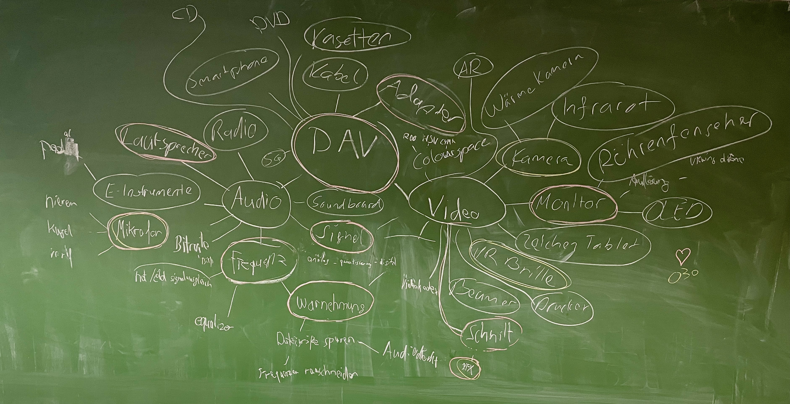
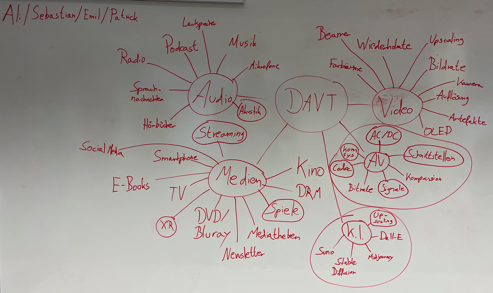
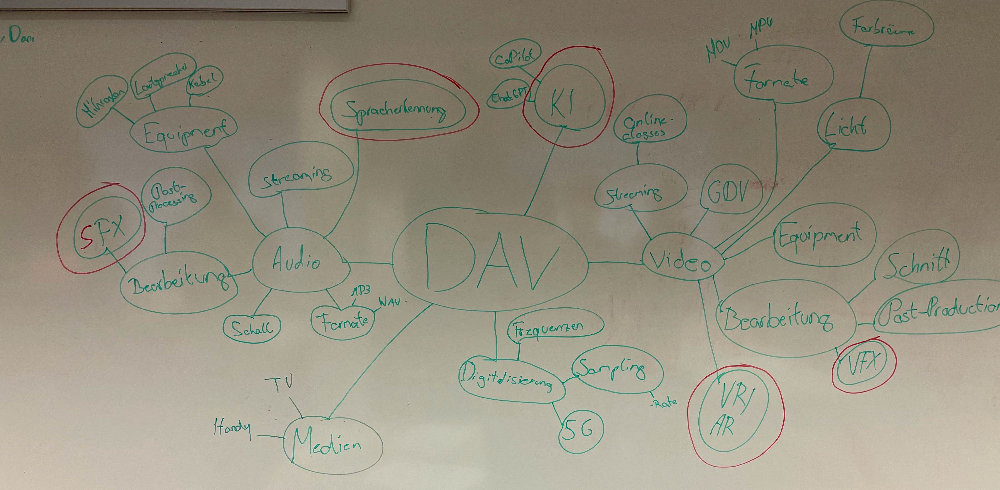
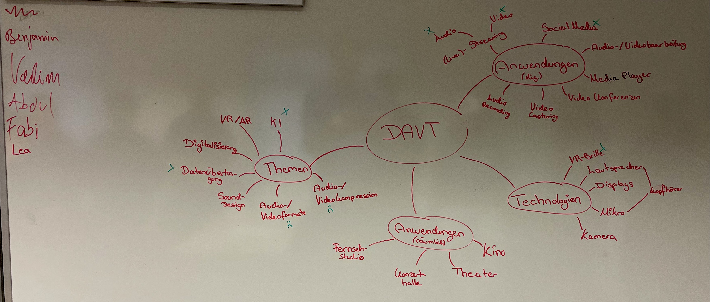
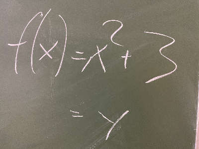
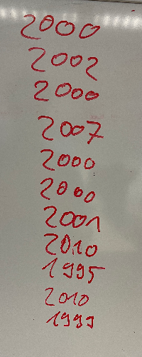
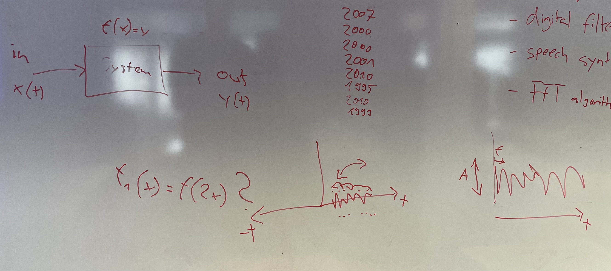
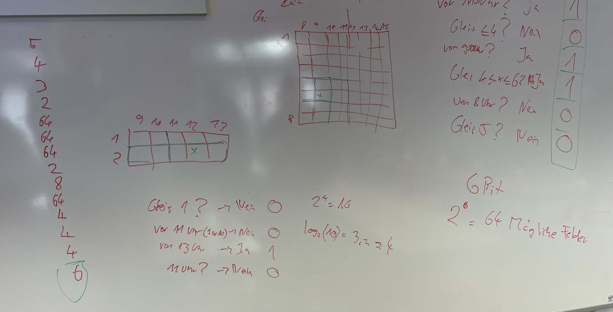
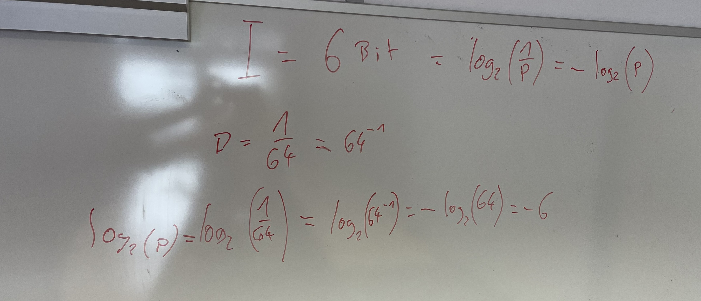

Vorlesungen
Erster Termin¶
Mittwoch, 02.10.2024 in Raum L2.05a
Ziele¶
Übersicht bekommen, was die Themen des Kurses sind. Klarheit, wie im Kurs gearbeitet werden soll.
Drehbuch¶
| Was | Dauer | Material |
|---|---|---|
| Begrüßung und Vorstellung | 15 min | DAVT-01-Introduction.pdf |
| Inhaltsübersicht | 5 min | DAVT-01-Introduction.pdf |
| Aufgabenblatt 01 - Mind map | 70 min | DAVT-Aufgabenblatt01.pdf |
Ergebnisse¶
Mindmaps¶




Interessantesten Themen¶
Mehrfach genannt:
-
Streaming von Audio und Video (Spotify, Netflix)
-
KI (Künstliche Intelligenz) z.B. Spracherkennung, generative KI Modelle
-
XR (Xtended Reality, also VR und AR, auch wie VR Brillen funktionieren)
-
VFX/SFX (also Special Effects in Video und Audio)
-
Zusammenhang/Grundlagen der Kommunikation, Codecs, Signale, Schnittstellen usw.
- Kompression und Datenübertragung
Einzelnennungen:
- Kameras, Lautsprecher, Adapter, Spiele, Akustik, Social Media,
Fazit¶
Es sind Grundkenntnisse aus den Video- und Audiotechnik Vorlesungen vorhanden, die weniger wiederholt, sondern mehr vertieft werden sollen. Streaminganwendungen finden ein großes Interesse und auch die Methoden der künstlichen Intelligenz, sowie XR Technologien. Special effects (VFX/SFX) sind weniger Teil dieser Vorlesung, aber Interesse ist da und mögliche Verbindungen werden aufgezeigt.
Zweiter Termin¶
Mittwoch, 09.10.2024 in Raum L2.05a
Ziele¶
Historische Übersicht zur Digitaltechnologie
Grundbegriffe klären: system, signal, Kommunikation, Nachricht, Codierung, ...
Drehbuch¶
| Was | Dauer | Material |
|---|---|---|
| Impulsvortrag zu Systemen | 20 min | DAVT-02-SignaleSysteme.pdf |
| Höraufgabe | 20 min | Es wird eine Tonaufnahme abgespielt und wir versuchen den Informationsfluss so detailliert wie möglich aufzuzeichnen. |
| Impulsvortrag zu Signalen | 20 min | DAVT-02-SignaleSysteme.pdf |
| Textaufgabe | 20 min | DAVT-Aufgabenblatt02.pdf |
| Signalfunktionen und Wrap-Up | 10 min | DAVT-02-SignaleSysteme.pdf |
Ergebnisse¶
nur bis zur Textaufgabe gekommen...
Tafelbild zur Höraufgabe¶
 Von Einsteins Sprache über ein Mikrofon zur Tonbandaufnahme
Von Einsteins Sprache über ein Mikrofon zur Tonbandaufnahme
Spätere Rundfunkaustrahlung entweder terrestrisch (T), per Kabel (C) oder per Satellit (S).
Tafelbild Signale¶
Eine Funktion:

Ein diskretes Signal als Schaubild:

Immer darauf achten, dass die Zwischenwerte Sinn ergeben. In diesem Beispiel tun sie es nicht!
Ergebnisse vom Aufgabenblatt 02¶
Unbekannte Begriffe:
-
multiplexing
- muss noch genauer geklärt werden, wenn es zum Thema Modulation kommt.
-
digital filtering
- Digitale Filter sind aus GDV bekannt, wir gehen aber auch nochmals drauf ein.
-
speech synthesis
- Sprachsynthese, also das Erzeugen von künstlicher Sprache (Bsp. Siri, Alexa, Bahnhofsansagen, ...)
-
Fast Fourier Transform algorithm
- ein sehr schneller Algorithmus zur Berechnung einer Fouriertransformation, kommt auch später nochmal im Detail und wo er eingesetzt wird.
Schätzungen zum Erscheinungsjahr des Texts:

Im Schnitt ungefähr 2002 --> Ursprung des Texts: Alan Oppenheim (MIT) Lecture on digital signal processing from 1975
Dritter Termin¶
Mittwoch, 16.10.2024 in Raum L2.05a
Ziele¶
Signale als Funktionen Informationstheorie: Was ist ein Bit?
Drehbuch¶
| Was | Dauer | Material |
|---|---|---|
| Signale als Funktionen | 10 min | DAVT-02-SignaleSysteme.pdf |
| Hörbeispiel | 10 min | MIT lecture |
| Informationstheorie: Was ist ein Bit? | 60 min | DAVT-03-Information.pdf bis Folie 10 |
| Informationstheorie: Was ist Entropie? | 10 min | DAVT-03-Information.pdf Folien 11-15 |
Ergebnisse¶
Signale als Funktionen¶

Zur Erinnerung: Audiosignale sind Wellenfunktionen, die eine Amplitude und eine Frequenz haben. Die Amplitude entspricht der Lautstärke, die Frequenz der Tonhöhe. Daher klingen schneller abgespielte Töne höher.
Hörbeispiel aus MIT Vorlesung¶
Start bei Minute 33:00. Es wird den Studierenden immer 30 Sekunden Zeit gelassen zu diskutieren und zu überlegen. Ergebnisse bei uns mit obigem Tafelbild erklärt.
Informationstheorie¶
Als Beispiel das folgende Szenario: Man möchte eine Bahnreise unternehmen und weiß nicht wann und wo der Zug fährt. Es gibt 8 Gleise und 8 Zeitslots (Stunden) in denen der Zug abfahren könnte. Wie viele Bit an Informationen benötige ich um das richtige Gleis zur richtigen Zeit zu finden?

Links die geratenen Werte der Teilnehmenden Rechts die Herleitung durch geschickte Fragestellungen, die den Lösungsraum jeweils halbieren. Links von der Mitte noch ein Beispiel mit 10 Möglichkeiten und der Diskussion ob 3 oder 4 Bits notwendig sind.
Herleitung der Formel¶

Der Informationsgehalt eines einzelnen Zeichens ergibt sich aus dem negativen, dualen Logarithmus der Wahrscheinlichkeit seines Auftretens.Entropie¶
Vergleich zur Thermodynamik angesprochen, Details siehe hier
Code zur Berechnung der Entropie einer Nachricht:
[!NOTE] entropy.py
import math # the message message = 'AAAAAAAA' # compute the proportion of each sign in the message def get_prop(message, sign ): return message.count(sign) / len(message) # get the proportion of each sign in the message pA = get_prop(message, 'A') pB = get_prop(message, 'B') pC = get_prop(message, 'C') pD = get_prop(message, 'D') print() # empty line print('Probabilities:') print(pA, pB, pC, pD) print() # empty line # compute the entropy H = -pA * math.log2(pA) - pB * math.log2(pB) - pC * math.log2(pC) - pD * math.log2(pD) print() # empty line print('Entropy:') print(H) print() # empty lineContents
Vierter Termin¶
Mittwoch, 23.10.2024 in Raum L2.05a
Ziele¶
Entropie und Redundanz verstehen Anwendung der Informationstheorie: Kompression und Fehlerkorrektur Hamming Codes verstehen und implementieren können
Drehbuch¶
| Was | Dauer | Material |
|---|---|---|
| Wiederholung und Ergänzung Entropie | 5 min | DAVT-03-Information.pdf Folien 12 - 15 |
| Übungsaufgabe | 25 min | DAVT-Aufgabenblatt03.pdf |
| Informationstheorie: Was bedeutet Redundanz? Anwendungen | 30 min | DAVT-03-Information.pdf Folien 16ff |
| Einstieg in die Kompression | 30 min | tbd |
Ergebnisse¶
tbd